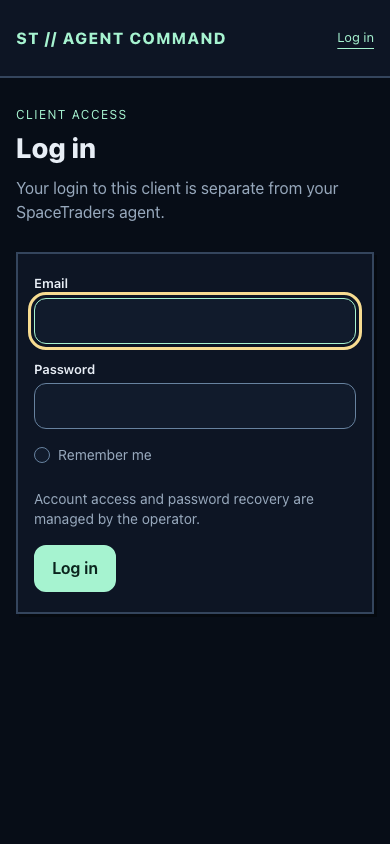
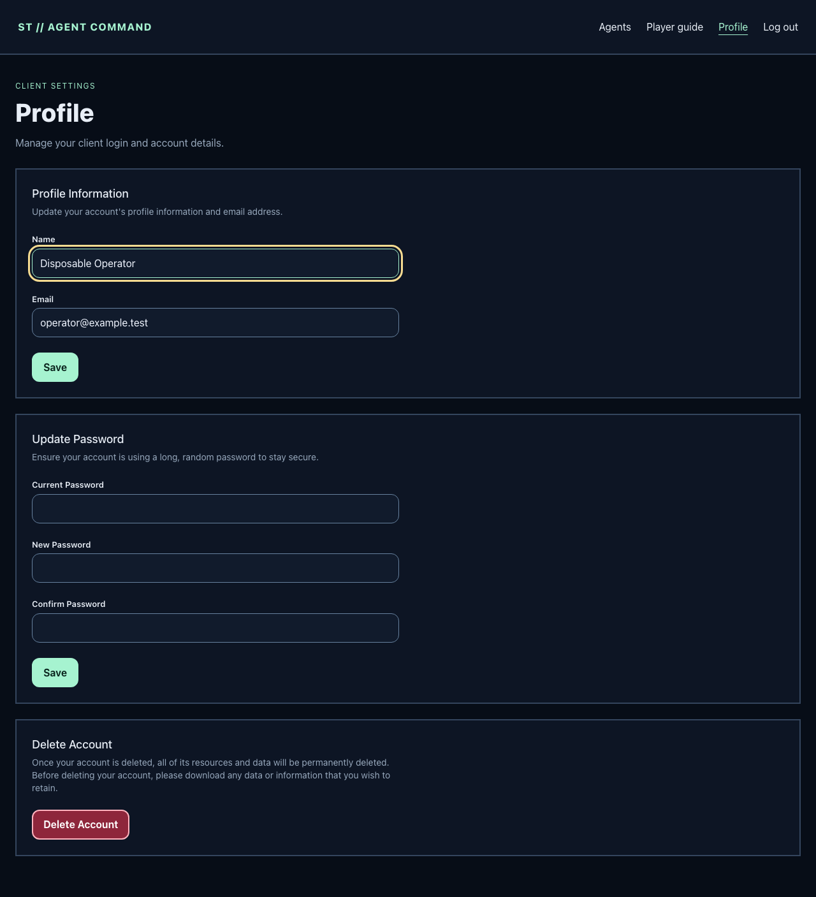
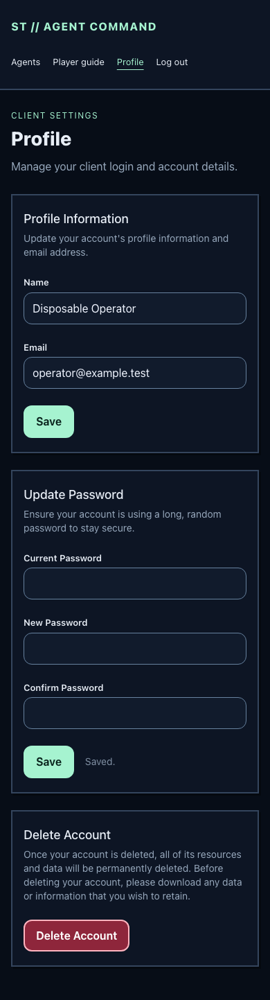

Issue 9 · OPS02 · local review · November 1, 2026
Public client registration, guest password reset, and email verification return 404. Their routes, controllers, UI pages, and links are removed. Operator provisioning and recovery use a hidden interactive terminal. This work is retained locally for Taylor's review.
Acceptance source: issue #9, the existing draft PR #10, and the deployment plan. Only this task's brief was copied from the PR branch. No unrelated plan branch was merged.
Branch implement/issue-9-private-account-access-20261101. Base 5c1990696811554d03a752dae2cfec6259fcc36c. The branch and bound worktree were clean before implementation.
Path /Users/Taylor/.t3/worktrees/spacetraders/implement-issue-9-priva-3e810a6055e0d7a3. Execution used the owned scripts/herd-php wrapper with PHP 8.5.12, Laravel 13, Node 26.13.0, pnpm 12.16.1, and locked dependencies. No lockfile, shared Herd runtime, primary-site configuration, or existing environment was changed.
spacetraders:operator create refuses an existing account, then checks again inside SQLite's immediate transaction. Provisioning accepts no password argument or file.spacetraders:operator recover targets an exact existing email. It changes that account's password and remember token, and removes its old reset tokens atomically. A storage-failure regression proves rollback.MAIL_MAILER=log or delivery settings cannot enable logging or delivery after configuration caches are rebuilt.Gameplay registration with SpaceTraders remains available after login. These changes close client account registration. No gameplay, timing, currency, reserve, Stop, reset, or reconciliation logic was changed.
The OPS02 browser harness owns and removes its database, key, storage, caches, fake world, locks, budget path, and loopback server. It generates fixture passwords in memory and passes them through stdin, never argv, environment variables, or saved evidence. Existing worker/page harnesses use their own disposable offline fixtures. No real operator account or credential was created or changed. The shared preview separately loaded the guest login and its compiled assets successfully on a temporary guest-only loopback server, which was stopped afterward.
The first browser attempt started before its owned Chromium download finished. After installation, the journey passed. The first redirected-input negative check then showed that Symfony's hidden-input fallback setting alone still accepted pipe input. An explicit stream_isatty(STDIN) check now rejects it before prompting or changing data; the real PTY and pipe regressions both pass. The final mobile screenshot was recaptured after settling focus and scroll to remove a capture-time skip-link overlay.
The screenshots show only disposable fixture identities and empty password fields. They were opened and inspected after the final run.



Local acceptance is complete. Nothing was pushed, merged remotely, deployed, or applied to real credentials. No live game request, paid call, external mail, or notification was sent. Hosted CI, production runtime/cache rebuilding, real provisioning, and deployment remain outside this authorization. No independent Sonnet review was run; subagents were prohibited.
Use this local implementation commit to update the existing PR #10 during a separately authorized publication step. Its old remote branch contains the preparation brief only. Preserve this branch, integrate against the current main, resolve the task brief as implemented, and rerun checks on the integrated head. Do not create another PR or merge the old collection of plan branches.
Before an approved deployment, rebuild route and configuration caches from the release path. Existing cached files retain their previous behavior until rebuilt. Preserve APP_KEY, database, session files, and encrypted agent tokens. Rolling back to earlier code reopens public auth and its mail settings, so review access controls before rollback. No schema migration is required. Production account creation and secret escrow require their own approved execution.
Reproduction commands and operator instructions are in README. The rerunnable terminal/browser check is scripts/verify-private-account-browser.mjs, with Python 3's standard-library PTY driver.